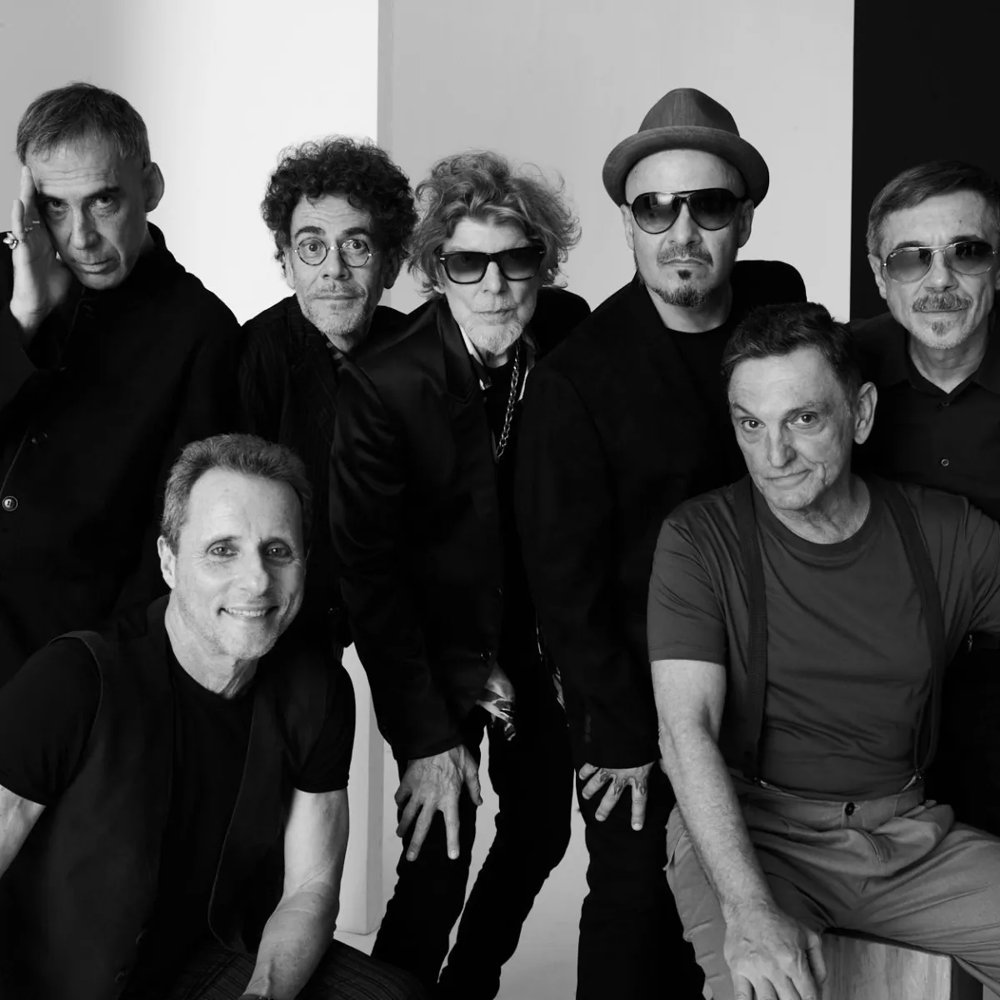

Rock
O rock é um gênero músical que marcado pelo seu som de guitarra elétrica está presente em todo o mundo atualmente.
Contexto Histórico
O rock surgiu na década de 50 nos Estados Unidos a partir do blues.
Surgimento do rock
A década de 50 foi marcada pelo surgimento do rock, tendo consigo uma mescla do estilo Rhythm.
Globalização do rock
A década de 60 foi marcada pela globalização do rock, ela ocorreu a partir da banda The Beatles que por meio da música Fab Four ficaram conhecidos mundialmente
Ramificação do rock
A década de 70 foi marcada pelo sutmimento de ramificações do rock como o heavy metal, hard rock, dentre outros.
Curiosidades
O rock é majoritariamente composto por músicas com trilhas mais fortes.
Principais instrumentos
O rock é marcado pela presença da guitarra elétrica, baixo elétrico e da bateria em quase todos os seus subgêneros.
Primeira banda a atingir escala global
A primeira banda de rock a se tornar mundialmente conhecida foi os The Beatles, uma banda inglesa que surgiu nos anos 60.
Impacto no Brasil
No Brasil o rock possuiu grande presença em comerciais politicos durante o movimento das Diretas Já, algumas bandas presentes nesse processo foram a Legião Urbana e os Titãs.
Galeria de Fotos
Algumas fotos atreladas ao gênero musical.

